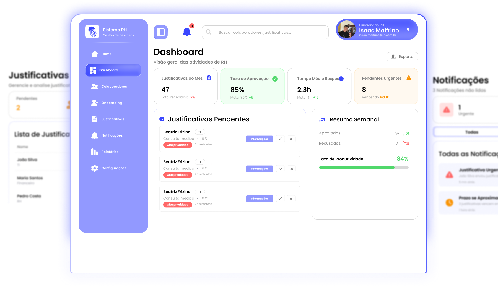
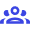
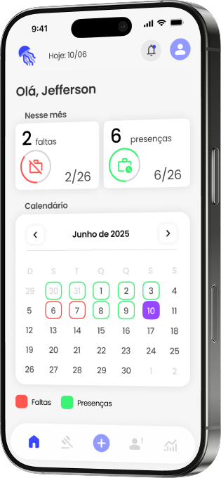
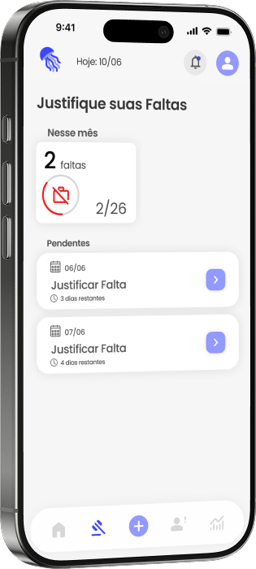
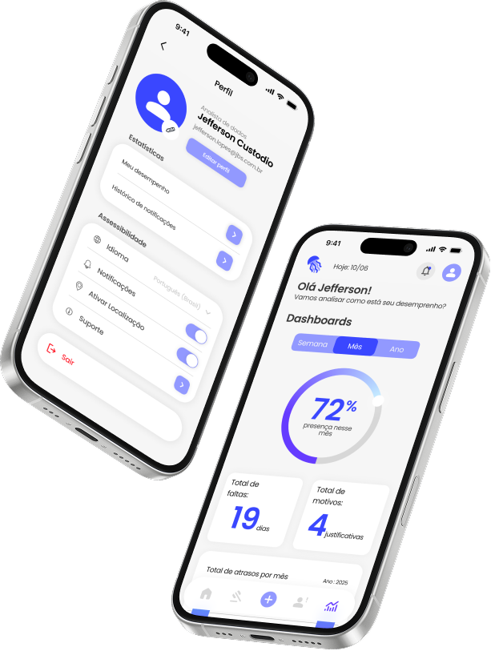

Monitore estrategicamente a presença das equipes e transforme dados em decisões que fortalecem a gestão e promovem a saúde organizacional.
Entenda o tempo e transforme a presença
Colaboradores ativos
247
Total na empresa
aion
Monitore estrategicamente a presença das equipes e transforme dados em decisões que fortalecem a gestão e promovem a saúde organizacional.
Colaboradores ativos
247
Total na empresa
Com o Aion, o RH acompanha o desempenho de colaboradores, departamentos e da empresa, organiza justificativas de ausência e identifica padrões em dashboards inteligentes. Tudo para estar mais próximo de cada colaborador, com transparência, reconhecimento e uma gestão clara e assertiva.
Conhecer Plataforma

Acesse informações em tempo real para tomar decisões rápidas e estratégicas sobre a gestão de pessoas.

Facilite a comunicação entre RH, líderes e colaboradores, fortalecendo a clareza no dia a dia.
Receba lembretes sobre prazos, aprovações e pendências em tempo real.
Visualize seu histórico de presenças e faltas com total clareza.

Através de um calendário intuitivo que destaca cada registro e facilita o acompanhamento da sua jornada.

justificadas
0/2
Controle suas ausências: visualize faltas, justifique-as e mantenha o seu histórico sempre em dia.
Para que você resolva suas pendências sem burocracia.

Acompanhe seu desempenho em tempo real com dashboards claros e intuitivos.
Com informações organizadas para facilitar seu controle.
Acreditamos que acesso fácil e claro às informações fortalece a relação entre empresa e colaborador.
Usamos inovação não apenas para automatizar processos, mas para melhorar a experiência e o bem-estar de todos na empresa.
O sucesso da empresa está diretamente ligado ao desenvolvimento e satisfação de cada colaborador.